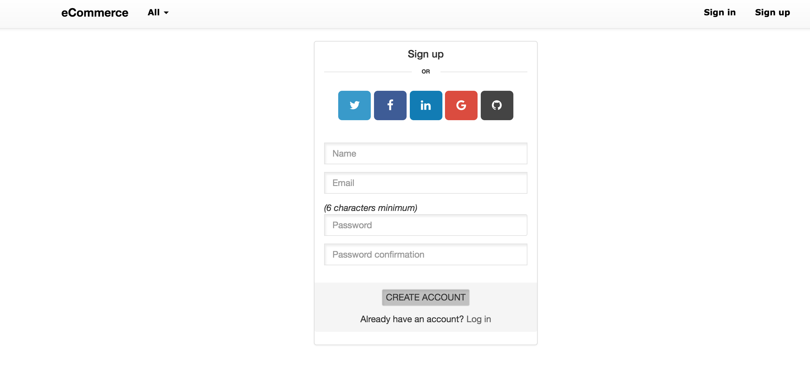
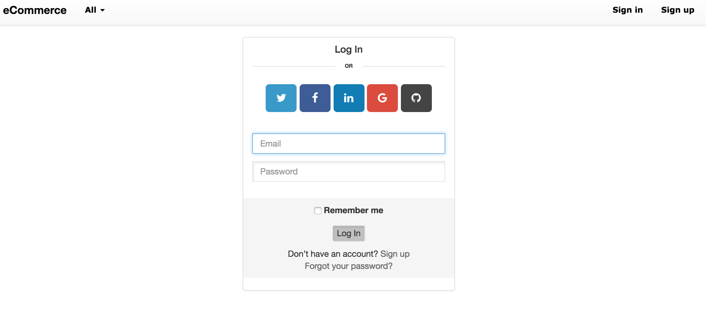
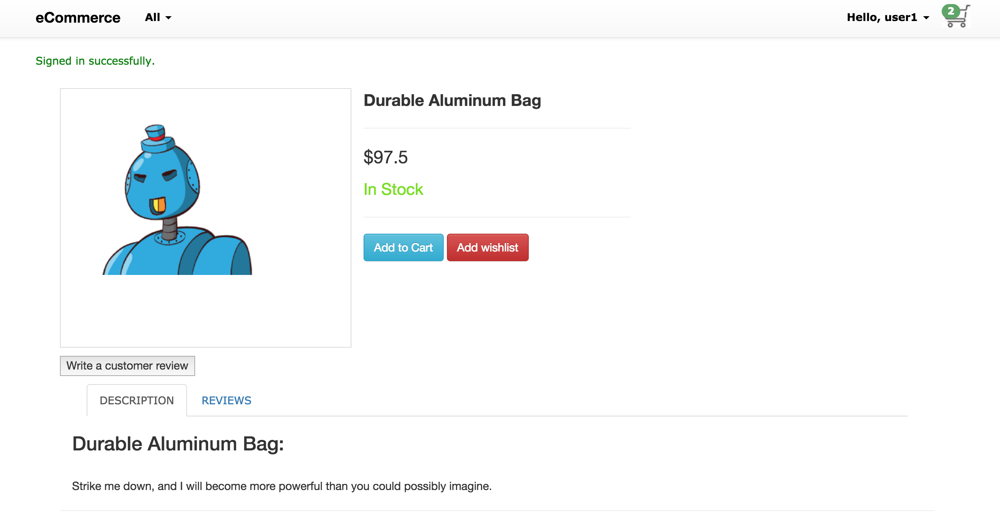
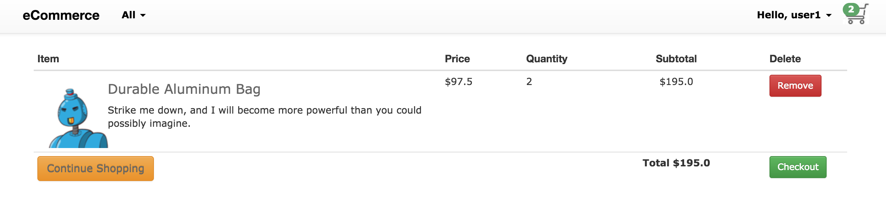
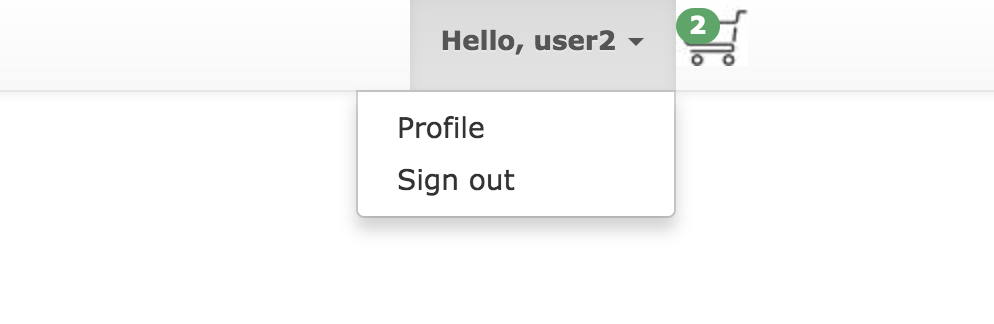
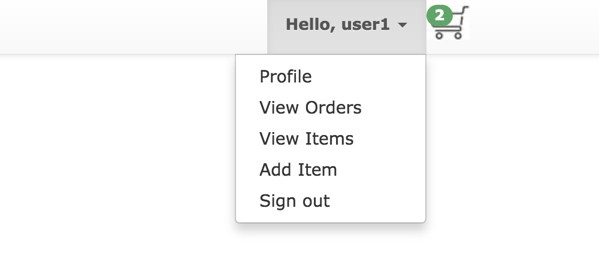
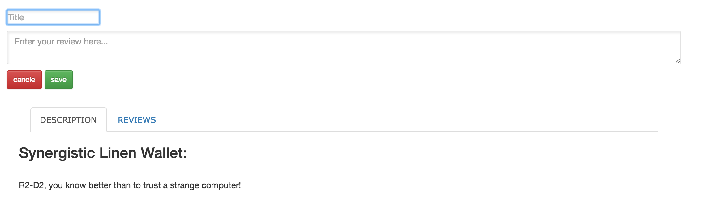

project name eCommerce.
I try to build eCommerce app by using ruby on rails mvc frameworks and i start it from flatiron store project and i also add cool feature the projects required for example for user authentication we can registered as new user or we can use popular socail media networks like twitter, facebook, google+ even githubs and linkedin i used omniauth-oauth2 gem for this purpose and devise gem authentication and pundit gem for authorization and paperclip gem for item image, font-awesome-rails gem for button's icon, country_select gem for listing country's
Let's start with how to use it
User sign Up form
User login form
There is two type's of user customer and admin and customer's has to be login to put item's in the cart and to write item reviews
customer can view item in the cart and he/she can remove items from the cart
customer can edit his profile or sign out
Admin user menu includes additem, viewitem and view orders
customer can write items review first by selecting item
Project source code on github eCommerce-project-v-000